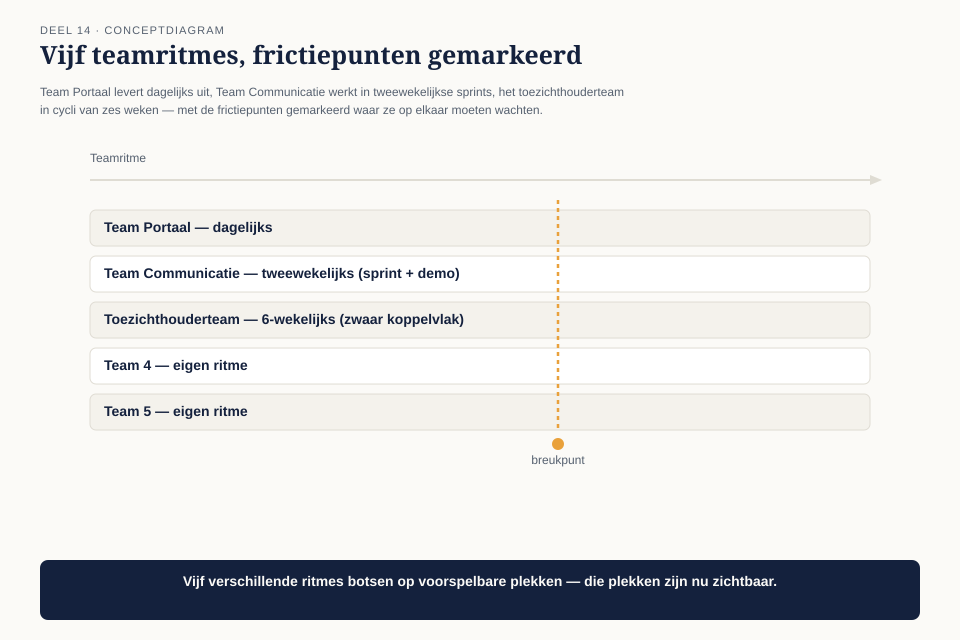
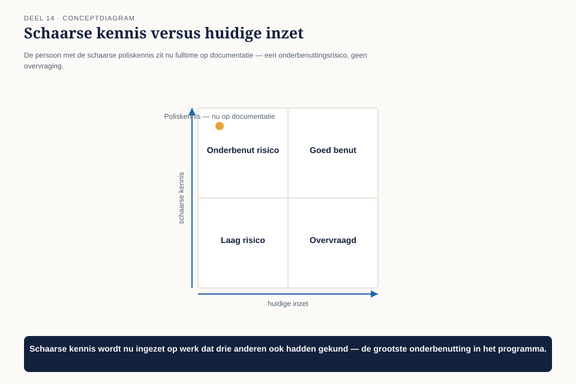
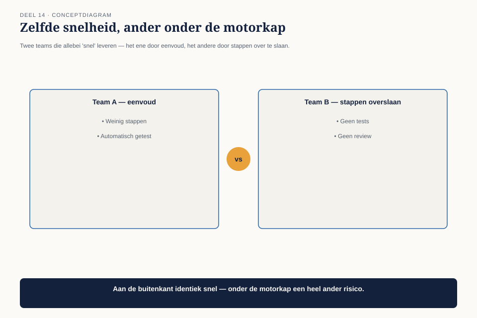
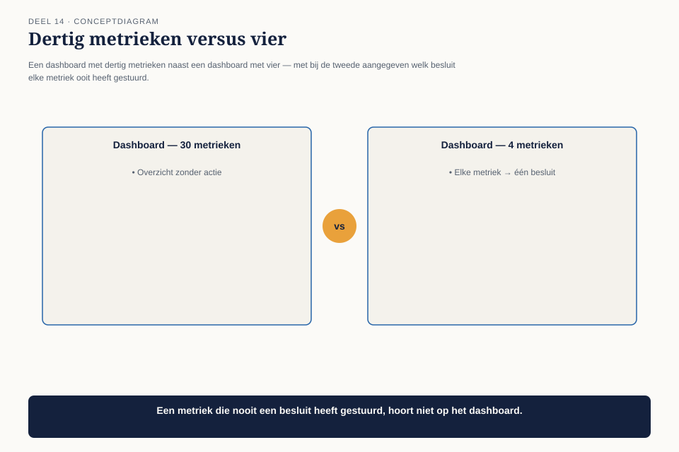

Deel 14 — Digital Employee en Digital Operations
Slidedeck · Ductus-cursus BTABoK · Niveau 2 · deel 14 van 30 · 27 slides
Slide 1 — Titel: Digital Employee & Digital Operations
Deel 14
Ductus
Slide 2 — Agenda: Vandaag
- Vijf teams, vijf ritmes
- Wat je meet is wat je krijgt
- Benutting
- Twee soorten snelheid
- Meetbaarheid
Slide 3 — Sectie: 1. Vijf teams, vijf ritmes
Slide 4 — Figuur: Vijf ritmes op een tijdlijn

Slide 5 — Bullets: De wrijving
- Team Portaal: dagelijks
- Toezichthouderteam: cycli van 6 weken
- Team Portaal wacht op een koppelvlak — voelt traag
- Toezichthouderteam voelt de druk als onzorgvuldig
Slide 6 — Statement: Geen van beide werkt fout
Niemand had het ritmeverschil ooit expliciet gemaakt
Slide 7 — Opdracht: Opdracht 1 — Ritmes naast elkaar
15 minuten, individueel
Drie teams · waar ontstaat wrijving door wachten?
Slide 8 — Sectie: 2. Wat je meet is wat je krijgt
Slide 9 — Figuur: Twee maatstaven, één gedeelde

Slide 10 — Statement: Elk team optimaliseert rationeel
Voor wat het zelf gemeten ziet worden
Slide 11 — Bullets: De correctie
- Geen teambuildingsdag
- Een derde, gedeelde maatstaf naast de eigen
- “Tijd tussen aanvraag en levering van een cross-team koppelvlak”
Slide 12 — Opdracht: Opdracht 2 — Niet-uitgelijnde maatstaven
20 minuten, tweetallen
Twee teams · welke gedeelde maatstaf vermindert de wrijving?
Slide 13 — Sectie: 3. Benutting
Slide 14 — Figuur: Schaarse kennis × huidige inzet

Slide 15 — Bullets: De blinde vlek
- Enige kenner van het oude polissysteem
- Fulltime ingezet op werk dat drie anderen ook kunnen
- Schaarse kennis eerst op werk dat alleen zij kan doen
Slide 16 — Sectie: 4. Twee soorten snelheid
Slide 17 — Figuur: Identiek van buiten

Slide 18 — Tabel: Het verschil zit eronder
| Eenvoud | Risico | |
|---|---|---|
| Van buiten | snel | snel |
| Eronder | geautomatiseerd getest | stappen overgeslagen |
| Bij een fout | snel hersteld | duur, laat ontdekt |
Slide 19 — Statement: Wat gebeurt er als deze wijziging morgen een fout blijkt te bevatten?
Slide 20 — Opdracht: Opdracht 3 — Welk type snelheid?
15 minuten, individueel
Eigen team · binnen een uur gedetecteerd, of na weken?
Slide 21 — Sectie: 5. Meetbaarheid
Slide 22 — Figuur: 30 metrieken vs. 4

Slide 23 — Statement: Voor elke metriek: welk besluit heeft hij ooit veranderd?
Zo niet — dan is het controle-theater, geen sturing
Slide 24 — Tabel: Vier metrieken voor Mutatieplatform
| Metriek | Stuurt |
|---|---|
| Tijd tot levering cross-team koppelvlak | capaciteitsbesluit |
| Openstaande breukpunten | volgende transformatiefase? |
| % wijzigingen zonder test | afglijden naar risicovolle snelheid |
| Vastgelegde besluiten per kwartaal | beklijft het besluitenlogboek? |
Slide 25 — Opdracht: Opdracht 4 — De metriektoets
20 minuten, individueel
Eigen dashboard · schrap wat de toets niet doorstaat
Slide 26 — Bullets: Wat dit deel heeft opgeleverd
- Werkritmes expliciet naast elkaar gelegd
- Een gedeelde maatstaf naast de eigen maatstaf per team
- Snelheid: eenvoud versus risico, onderscheidbaar via één vraag
- Vier metrieken in plaats van een dashboard vol ruis
Slide 27 — Titel: Volgende keer
Deel 15 — Value model I
Twee dagdelen. De waarde van architectuur voor het hele programma, expliciet gemaakt.